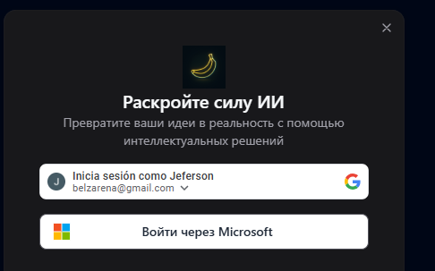
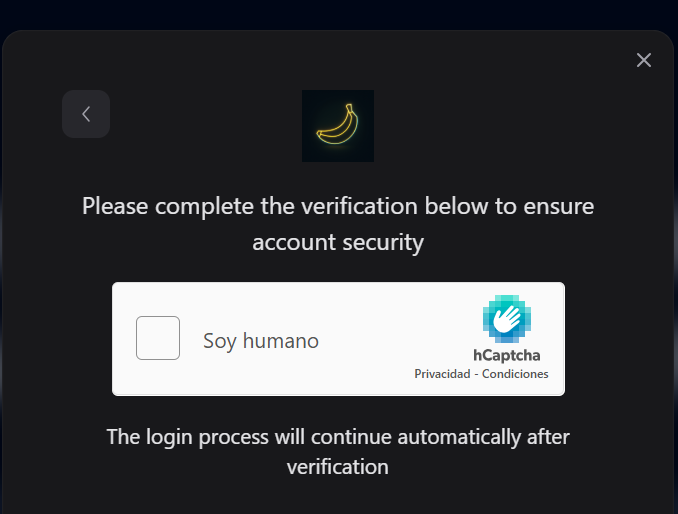
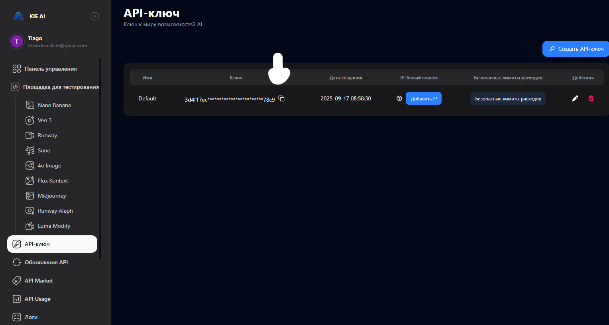
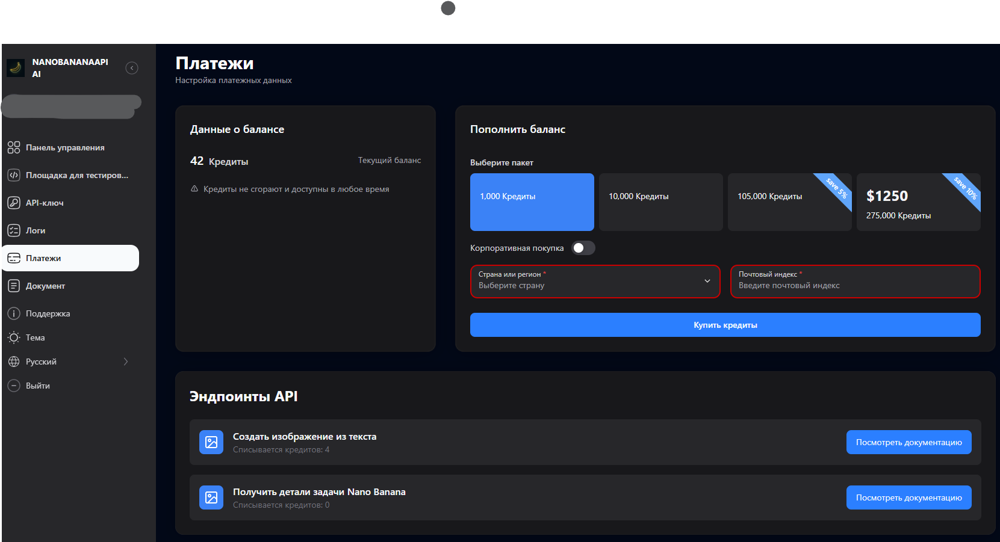
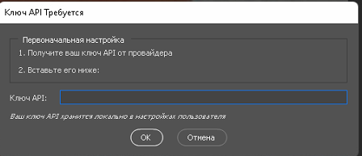
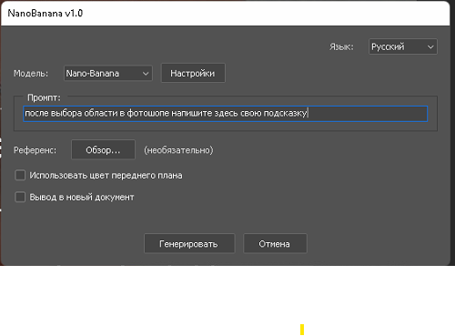
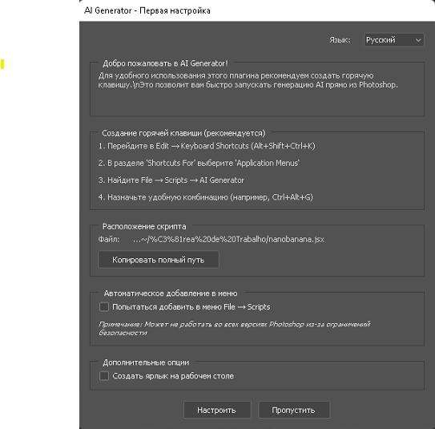

🚀 Step-by-Step Guide: Getting Your NanoBanana API Key and Setting Up the Photoshop Script
Why You Need This
The Photoshop script connects to NanoBanana's AI models (like Nano-Banana / Flux Kontext). To do this, it needs permission to talk to NanoBanana's servers. That permission is granted through an API key — a long secret code that works like a password.
👉 Without this key, the script cannot run AI models inside Photoshop.
1. Create or Log In to a NanoBanana Account
- Open https://kie.ai in your browser.
- Click "Explore Features" or "Start" button.
- You'll see a login modal with two options:
- Google Account: Click the Google button to sign in with your Gmail
- Microsoft Account: Click "Sign in with Microsoft"

- Complete the verification process:
- You'll see a CAPTCHA verification with "I am human"
- Check the box to verify you're human

✅ After logging in, you'll be redirected to your NanoBanana dashboard.
2. Navigate to API Keys Section
- Once logged in, you'll see the main dashboard.
- In the left sidebar, click on "API Keys" section.

- You'll see your API key management page with:
- Your existing API key (partially hidden for security)
- Creation date
- Options to manage your key
3. Get Your API Key
- In the API Keys section, you'll see a key labeled "Default".
- Click the copy button next to your API key to copy it to clipboard.
- ⚠️ This is secret — never share it publicly. Treat it like your password.
- Keep this key safe - you'll need it for the Photoshop script.
4. Check Your Credits (Optional Top-up)
💡 Good news! Your account comes with 80 free credits for testing. Each generation costs 4 credits, so you have enough for about 20 free generations.
- Click on "Payments" in the left sidebar.

- You'll see:
- Current balance: Your available credits
- Credit packages available: 1,000, 10,000, 105,000, and 275,000 credits
- Pricing: Starting from basic packages
- For testing: The existing 80 free credits are perfect to start with. Since each generation costs 4 credits, this gives you approximately 20 free attempts.
- For extended use: The most basic top-up package (1,000 credits) will give you approximately 250 requests and is very affordable.
5. Install the Photoshop Script
- Download the
.jsx file provided.
- Copy it into your Photoshop Scripts folder:
- Windows:
C:\Program Files\Adobe\Adobe Photoshop \Presets\Scripts
- Mac:
/Applications/Adobe Photoshop /Presets/Scripts
- Restart Photoshop.
- After restart, the script will appear under File → Scripts.
6. Connect the Script to NanoBanana API
- In Photoshop, run the script (File → Scripts → NanoBanana).

- When you see the "API Key Required" dialog:
- Paste the API key you copied from the NanoBanana dashboard
- Click "OK" to save
- The script will remember your key for future use.
7. Configure the Script

- In the NanoBanana v1.0 interface:
- Model: Select "NanoBanana" from the dropdown
- Language: Choose "Russian" or your preferred language
- Prompt: Enter your image generation prompt
- References: Choose "Browse..." if you want to upload reference images
- Configure other settings as needed
- Click "Generate" to create your image!
8. Advanced Configuration (Optional)

If you need advanced settings:
- Access "AI Generator - Initial Setup"
- Configure:
- Hotkey combinations (Ctrl+Shift+Ctrl+H)
- Scripts location and file paths
- Automatic menu addition
- Additional script options
Available API Endpoints
Your account has access to these API endpoints:
- "Create image from text" - 4 credits per request
- "Get Nano Banana task details" - 0 credits
⚠️ Troubleshooting
- Can't find your API key? Go back to NanoBanana dashboard → API Keys section
- Low on credits? Check the Payments section to top up
- Script not showing in Photoshop? Make sure you copied the
.jsx into the correct folder and restarted Photoshop
- Authentication issues? Try logging out and back in to NanoBanana
💡 Pro Tips
- Start with free credits: Use your included 50 free credits to test the system
- Most economical option: The 1,000 credit package gives you ~250 generations
- Save your prompts: Keep track of prompts that work well for future use
- Monitor usage: Check your credit balance regularly in the Payments section
You're now ready to generate amazing AI images directly inside Photoshop! 🎉
🚀 Пошаговое руководство: Получение API-ключа NanoBanana и настройка скрипта для Photoshop
Зачем это нужно
Скрипт Photoshop подключается к моделям ИИ NanoBanana (таким как Nano-Banana / Flux Kontext). Для этого ему требуется разрешение на связь с серверами NanoBanana. Это разрешение предоставляется через API-ключ — длинный секретный код, который работает как пароль.
👉 Без этого ключа скрипт не сможет запускать модели ИИ внутри Photoshop.
1. Создание или вход в аккаунт NanoBanana
- Откройте https://kie.ai в вашем браузере.
- Нажмите кнопку "Исследовать возможности" или "Начать".
- Вы увидите модальное окно входа с двумя вариантами:
- Аккаунт Google: Нажмите кнопку Google для входа через Gmail
- Аккаунт Microsoft: Нажмите "Войти через Microsoft"
- Завершите процесс верификации:
- Вы увидите проверку CAPTCHA с "Soy humano" (Я человек)
- Поставьте галочку, чтобы подтвердить, что вы человек
✅ После входа вы будете перенаправлены на панель управления NanoBanana.
2. Переход к разделу API-ключей
- После входа в систему вы увидите главную панель управления.
- На левой боковой панели нажмите на раздел "API-ключ".
- Вы увидите страницу управления API-ключами с:
- Вашим существующим API-ключом (частично скрыт для безопасности)
- Датой создания
- Опциями управления вашим ключом
3. Получение вашего API-ключа
- В разделе API-ключей вы увидите ключ с меткой "Default".
- Нажмите кнопку копирования рядом с вашим API-ключом, чтобы скопировать его в буфер обмена.
- ⚠️ Это секретная информация — никогда не делитесь ею публично. Относитесь к ней как к паролю.
- Сохраните этот ключ в безопасном месте - он понадобится для скрипта Photoshop.
4. Проверка ваших кредитов (Дополнительное пополнение)
💡 Хорошие новости! Ваш аккаунт поставляется с 80 бесплатными кредитами для тестирования. Каждая генерация стоит 4 кредита, так что у вас хватит примерно на 20 бесплатных генераций.
- Нажмите на "Платежи" на левой боковой панели.
- Вы увидите:
- Текущий баланс: Ваши доступные кредиты
- Доступные пакеты кредитов: 1,000, 10,000, 105,000 и 275,000 кредитов
- Цены: Начиная с базовых пакетов
- Для тестирования: Существующих 80 бесплатных кредитов прекрасно достаточно для начала. Поскольку каждая генерация стоит 4 кредита, это дает вам примерно 20 бесплатных попыток.
- Для расширенного использования: Самый базовый пакет пополнения (1,000 кредитов) даст вам примерно 250 запросов и очень доступен по цене.
5. Установка скрипта Photoshop
- Скачайте предоставленный файл
.jsx.
- Скопируйте его в папку скриптов Photoshop:
- Windows:
C:\Program Files\Adobe\Adobe Photoshop \Presets\Scripts
- Mac:
/Applications/Adobe Photoshop /Presets/Scripts
- Перезапустите Photoshop.
- После перезапуска скрипт появится в меню Файл → Сценарии.
6. Подключение скрипта к NanoBanana API
- В Photoshop запустите скрипт (Файл → Сценарии → NanoBanana).
- Когда появится диалоговое окно "Ключ API Требуется":
- Вставьте API-ключ, который вы скопировали с панели управления NanoBanana
- Нажмите "ОК" для сохранения
- Скрипт запомнит ваш ключ для будущего использования.
7. Настройка скрипта
- В интерфейсе NanoBanana v1.0:
- Модель: Выберите "NanoBanana" из выпадающего списка
- Язык: Выберите "Русский" или ваш предпочитаемый язык
- Промпт: Введите ваш промпт для генерации изображения
- Референсы: Выберите "Обзор...", если хотите загрузить референсные изображения
- Настройте другие параметры по необходимости
- Нажмите "Генерировать" для создания вашего изображения!
8. Расширенная настройка (Опционально)
Если вам нужны расширенные настройки:
- Откройте "AI Generator - Первая настройка"
- Настройте:
- Комбинации горячих клавиш (Ctrl+Shift+Ctrl+H)
- Расположение скриптов и пути к файлам
- Автоматическое добавление в меню
- Дополнительные опции скрипта
Доступные конечные точки API
Ваш аккаунт имеет доступ к этим конечным точкам API:
- "Создать изображение из текста" - 4 кредита за запрос
- "Получить детали задачи Nano Banana" - 0 кредитов
⚠️ Устранение неполадок
- Не можете найти ваш API-ключ? Вернитесь на панель управления NanoBanana → раздел API-ключ
- Мало кредитов? Проверьте раздел Платежи для пополнения
- Скрипт не показывается в Photoshop? Убедитесь, что вы скопировали
.jsx в правильную папку и перезапустили Photoshop
- Проблемы с аутентификацией? Попробуйте выйти и снова войти в NanoBanana
💡 Полезные советы
- Начните с бесплатных кредитов: Используйте ваши включенные 50 бесплатных кредитов для тестирования системы
- Самый экономичный вариант: Пакет 1,000 кредитов дает вам ~250 генераций
- Сохраняйте ваши промпты: Отслеживайте промпты, которые работают хорошо, для будущего использования
- Контролируйте использование: Регулярно проверяйте баланс ваших кредитов в разделе Платежи
Теперь вы готовы генерировать потрясающие изображения ИИ прямо в Photoshop! 🎉